Historia de Javascript
JavaScript nació en 1995 de la mano de Brendan Eich, quien lo creó en solo 10 días mientras trabajaba en Netscape. Su objetivo era hacer que las páginas web fueran más interactivas, ya que en ese entonces solo mostraban texto e imágenes estáticas.
💡 Al principio se llamó Mocha, luego LiveScript, y finalmente JavaScript para aprovechar la popularidad de Java (aunque no tienen nada que ver).
- 1996-1999: Microsoft lo copia y lo llama JScript. Esto crea caos porque cada navegador lo interpreta diferente.
- 1999-2009: Llega AJAX, permitiendo que las páginas se actualicen sin recargarse. Ahí nacen Gmail y Google Maps, revolucionando la web.
- 2009: Se lanza Node.js, permitiendo ejecutar JavaScript fuera del navegador. Ahora, con JS se puede crear servidores, apps móviles y hasta inteligencia artificial.
Sintaxis y Variables
JavaScript es un lenguaje de programación interpretado que se integra en un documento HTML mediante la etiqueta <script>, ubicada antes del cierre de </body>.
Se considera una buena practica finalizar las lineas con punto y coma ;
Variables y valores
Se declara/inicializa/crea una variable usando las palabras reservadas VAR LET o CONST y asignandole un nombre.

Variable: Espacio de memoria destinado a almacenar datos que se utilizaran en el programa. Un contenedor de informacion
Valores: Es lo que se asocia a las variables.
- LET: Fue introducido en ES6 (ECMAScript 2015) y es más moderno y flexible. Es el más recomendado para declarar variables que puedan cambiar su valor a lo largo del tiempo. Tiene un alcance (scope) local, lo que significa que solo es accesible dentro del bloque de codigo en el que se define. Si se intenta usar la variable ANTES DE SU DECLARACION, da error. Se usa cuando se necesite una variable cuyo valor puede VARIAR y reasignarse.


-
CONST: Al contrario de var y let, CONST no varía su valor, su valor es CONSTANTE. Cuando se ejecuta el programa el valor de la constante NO CAMBIA. Se puede modificar cuando el programa no se encuentra en ejecución. Esto no significa que el valor sea inmutable (por ejemplo, los objetos y arrays pueden cambiar), sino que la referencia a la variable no puede cambiar. Tiene un alcance (scope) local. Usar const para declarar variables que no deben cambiar.

Si se declara un objeto o array con const no se puede reasignar la referencia al objeto o array, pero sí se puede modificar sus propiedades o elementos

- VAR: Es la manera tradicional de declarar variables en JavaScript, pero no se recomienda debido a sus limitaciones y comportamiento a veces inesperado. Tiene un alcance (scope) de función (si se define dentro de una función SOLO ES ACCESIBLE DENTRO DE ESA FUNCION). Si se define fuera de cualquier funcion, sera global (incluso si se encuentra dentro de un bloque como un
ifofor). Si se usa una variable var antes de declararla NO da error, pero su valor seraundefinedhasta que se ejecute la asignacion.var es útil para mantener código legado o cuando se necesita compatibilidad con versiones antiguas de JavaScript.
Tipos de datos
String (Cadena de texto)

Number (Números enteros o decimales)

Boolean (Booleanos / valores verdaderos o falsos)

Undefined (Variable declarada sin valor asignado)

Null (Representa un valor "vacío" o "nulo")


Tipos de datos complejos
Objeto
Almacena clave: valor entre llaves { } y las propiedades se separan con coma ,

Array (Arreglos)
Tipo de objeto que almacena una LISTA DE VALORES entre corchetes [ ]

Funcion
Bloque de codigo que se puede reutilizar llamando por el nombre de la funcion

Date (Fecha)
Tipo de objeto para manejar fechas y horas

Condicionales
Estructura que permite la toma de decisiones en el codigo dependiendo de las condiciones.
Es como "darle instrucciones al codigo"
Estructura de un condicional:
- Condición
- Acción que se ejecuta si la condición se cumple.
- Acción que se ejecuta si la condición no se cumple.
Si <condicion> entonces <operacion>
El objetivo del control de flujos con condicionales es marcar puntos en nuestra aplicación donde, a partir de alguna evaluación, el programa pueda tomar varios caminos posibles de acción.
Básicamente es un algoritmo porque son fragmentos de código que se ejecutan dependiendo de los pasos a seguir en el programa.
Condicionales en JavaScript
- if (condición)
- if...else
- if...else if...else
- Operador ternario
(condición ? true : false)metodo abreviado de if...else para cuando solo hay dos posibles opciones - switch...case
Estructura IF
Ejecuta un bloque de código si la condición es verdadera. Se ejecuta solo si la condición es true.
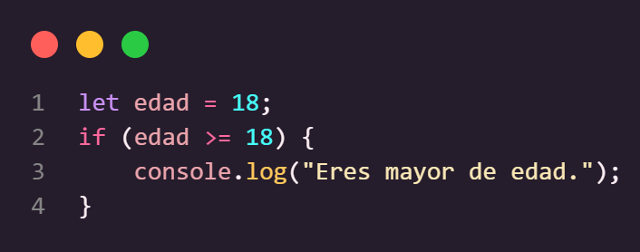Estructura IF...ELSE
Si la condición es falsa, ejecuta otro bloque de código. Evalúa dos caminos posibles.
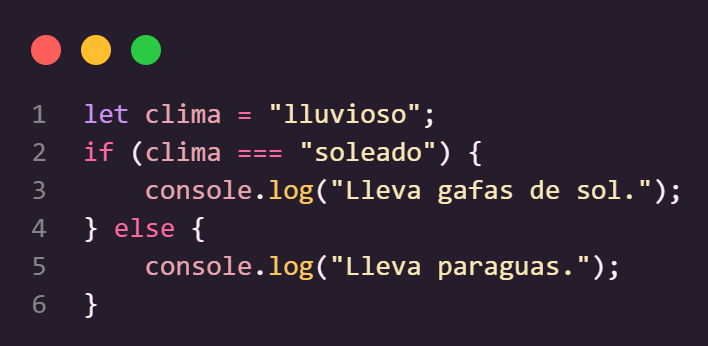Estructura IF...ELSE IF...ELSE
Múltiples condiciones secuenciales. Permite evaluar varias condiciones en orden.
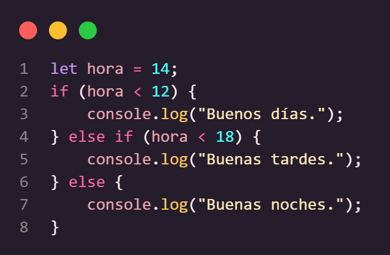Estructura SWITCH...CASE
Ideal para comparar una variable contra múltiples valores. Evita usar muchos if...else if cuando hay múltiples casos.
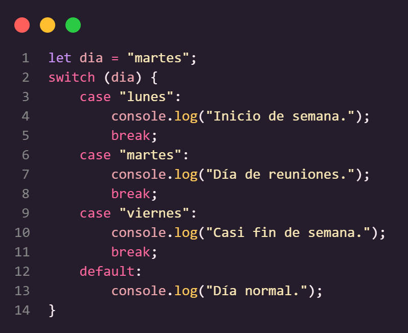Operador Ternario
Una forma más corta de escribir if...else cuando solo hay dos opciones. Útil para asignar valores en una sola línea.
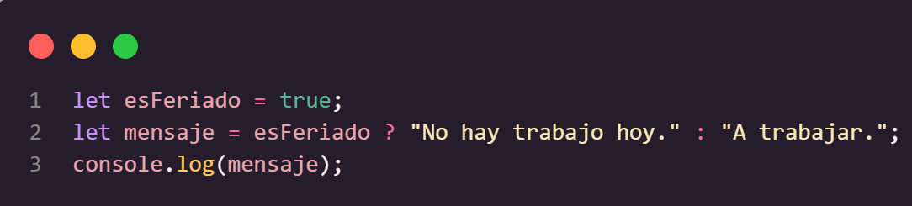Bucles / Ciclos de repeticion
Se usan para ejecutar una acción varias veces sin necesidad de escribir el mismo código repetidamente.
Son útiles cuando se necesita recorrer listas, contar elementos, hacer cálculos repetitivos o esperar una condición para continuar.
Casos donde se utilizan los bucles
- Mostrar una lista de productos en un ecommerce
- Contar hasta cierto número (ejemplo: un temporizador o cronómetro)
- Recorrer una base de datos para buscar información
- Validar respuestas en un formulario hasta que sean correctas
Tipos de bucles
For
El bucle FOR se usa cuando SI SE SABE cuántas veces se repite (ejecuta) una accion
Ejemplo "Contar del 1 al 5"
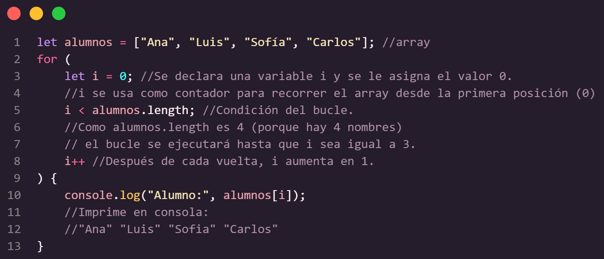Break
Se usa para SALIR DEL BUCLE antes de que termine su ejecución normal.
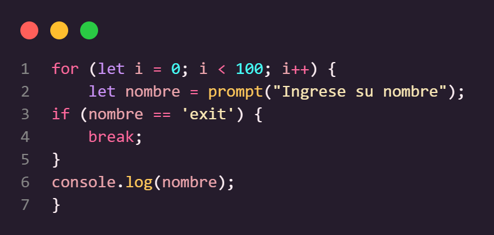Continue
Se usa para SALTAR UNA ITERACION ESPECIFICA del bucle, pero SIN DETENER su ejecución completa.
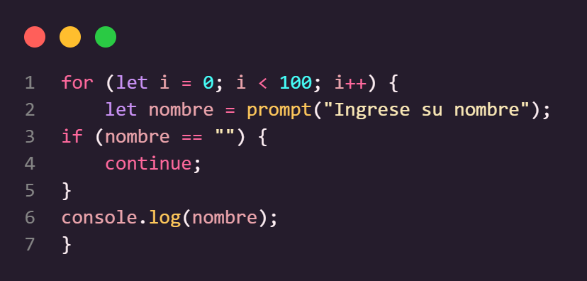While

El bucle WHILE se usa cuando NO SE SABE cuántas veces se se debe repetir (ejecuta) una accion
Se usa para repetir una acción HASTA que se cumpla una condición.
Ejemplo "Pedir una contraseña hasta que sea correcta"
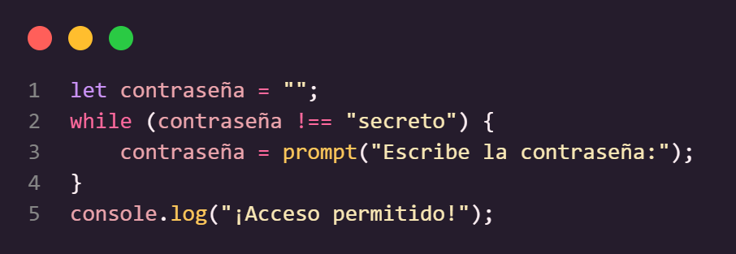Do...while EJECUTA MÍNIMO UNA VEZ
Ejecuta y luego sigue si la condición es verdadera.
Se usa cuando se necesita repetir al menos una vez HASTA QUE SE CUMPLA LA CONDICION.
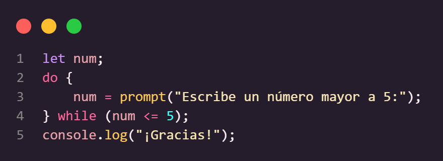
For...of Recorrer ELEMENTOS de un ARRAY
Ejemplo "Mostrar producto por consola"
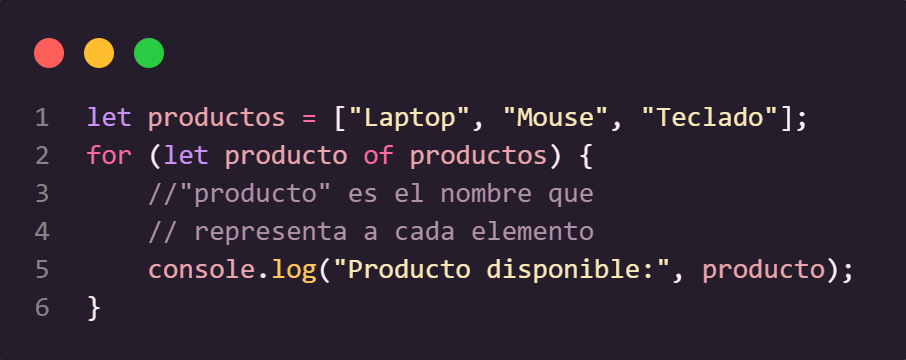